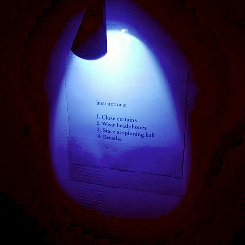

I made this piece for Art Hack Day: Lethal Software hosted by GAFFTA in San Francisco. The piece was installed in a small nook, only wide enough for one person to enter.

I put an LED and photocell on the headphones to detect when the viewer put them on. After some moments, the spinning ball would begin pulsating into a mandala. The animation would reset when the headphones came off.
The soundtrack is Justin Bieber - U Smile (800% slower).
The piece is based on an idea from the book You Are Here by Thich Nhat Hanh.
Stop! The street sign reminds you. Stop running, because life is here, in the present moment. We have to train in that. As you breath out, you say: “I am home.” I am already home, I don’t have to run. I am at home, in my true home. The address of my true home is clear: life, here and now. Peace is something that becomes possible the moment you stop.